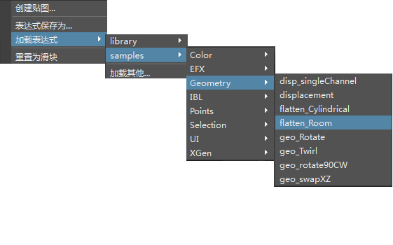
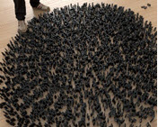

使用表达式摆放多米诺骨牌
本教程将介绍如何使用 XGen 设置多米诺骨牌并将它们排列成不同的阵列。我们将使用一个预设表达式来驱动“扭曲”(Twist)属性，通过这种方法创建一些有趣的图案。按照本教程操作，您可以不必像挨个排列多米诺骨牌那样辛苦和腰酸背痛，并会感叹这种方法是多么简单。
- 首先，下载并打开多米诺骨牌模型。
请务必将多米诺骨牌文件保存到磁盘，否则当您尝试导出它时，XGen 会显示以下错误：
// Error: line 1: xgmArchiveExportUI failed because the current scene isn't saved yet. //
- 选择多米诺骨牌模型后，转到*“生成 > 将当前选择项导出为归档...”(Generate > Export Selection as Archive (s)...)*
- 将“归档文件名”(Archive Name)重命名为 domino，然后选择归档文件的保存位置。
- 现在，我们需要使用一个曲面来应用 XGen 多米诺骨牌归档。创建一个多边形平面，将其“细分宽度”(Subdivisions Width)和“高度细分数”(Subdivisions Height)增加到 10。我们将使用此平面指定 XGen 描述。

- 选择该多边形平面，然后转到“生成 > 创建描述...”(Generate > Create Description...)。此操作将打开下面的“创建 XGen 描述”(Create XGen Description)。选择“自定义几何体/归档文件(用于已创建的任何模型)”(Custom Geometry/Archives (use for any model you have created))。将其他设置保留为默认值，并单击“创建”(Create)。
- 建议先降低“预览/输出”(Preview/Output)选项卡中的“百分比”(Percent)值，然后再继续操作。如果“百分比”(Percent)的值过高，您可能会发现计算机会因生成大量的基本体而停止运行。
添加归档
转到“基本体”(Primitives)选项卡，在“归档文件”(Archive Files)下，选择“添加”(Add)，然后转到之前保存多米诺骨牌归档的位置。单击“是”(Yes)导入随保存的多米诺骨牌归档文件一起导出的材质。
- 我们可以更改每个多米诺骨牌的图标颜色，甚至可以添加图像图标来表示每个归档。要执行此操作，请右键单击一个归档文件的红色方块，然后选择“编辑”(Edit)。

- 单击“缩略图”(Thumbnail)的文件夹图标，然后选择一个表示每个多米诺骨牌的位图。在下面的示例中，可以看到我们对每个多米诺骨牌的 Maya 视口进行了截屏，并将这些图像保存为文件。我们还可以更改图标的颜色，以及调整上面的滑块来增大图标大小：
密度(Density)
- 将“密度”(Density)增加到 1000 左右。这将增加多边形平面上的多米诺骨牌基本体的数量。如果归档不能很好地立在地板平面上，请确保在使用 XGen 导出前，使枢轴点位于多米诺骨牌的底边上。
大小(Size)
增大此值可使归档变小，减小此值可使归档变大。此值会根据用来指定 XGen 描述的地板平面几何体的大小而有所不同。相应地调整“大小”(Size)属性，使多米诺骨牌彼此不相交。
“大小”(Size)值从 1 增大到 20
最后的结果应类似下图（预览百分比 100）：
扭曲表达式
- 在“基本体属性”(Primitive Attributes)下，单击“扭曲”(Twist)滑块控件右侧的向下箭头 。

- 从菜单中选择以下项：
| 加载表达式 > 示例 > 几何体 > flatten_Room(Load Expression > samples > Geometry > flatten_Room) |
|---|

您应该会看到“宽度”(Width)和“深度”(Depth)属性出现在“扭曲”(Twist)下方：
扭曲宽度
在下面的动画中，您可以看到增大扭曲的“宽度”(Width)滑块产生的效果（动画显示扭曲宽度值从 1 增大到 1000）。
随机横跨曲面(Randomly across the surface)（左侧）。以统一的行和列(In uniform rows and columns)（右侧）。
围绕 N
如果您发现多米诺骨牌之间发生相交，应尝试降低多米诺骨牌的“密度”(Density)或“大小”(Size)。或者，也可以尝试调整“围绕 N”(Around N)的值。此属性会围绕曲面法线向量旋转归档（此向量不受凹凸、倾斜 U、倾斜 V 等因素的影响）。

“围绕 N”(Around N)值的关键帧介于 -180 到 180 之间
下图显示了不同的扭曲宽度值下使用“随机横跨曲面”(Randomly across the surface)和“以统一的行和列”(In uniform rows and columns)方式生成的基本体：
扭曲宽度：47
| 随机横跨曲面(Randomly across the surface) | 以统一的行和列(In uniform rows and columns) |
扭曲宽度：87
| 随机横跨曲面(Randomly across the surface) | 以统一的行和列(In uniform rows and columns) |
扭曲宽度：205
| 随机横跨曲面(Randomly across the surface) | 以统一的行和列(In uniform rows and columns) |
扭曲宽度：313
| 随机横跨曲面(Randomly across the surface) | 以统一的行和列(In uniform rows and columns) |
扭曲宽度：630
| 随机横跨曲面(Randomly across the surface) | 以统一的行和列(In uniform rows and columns) |
扭曲宽度：1000
| 随机横跨曲面(Randomly across the surface) | 以统一的行和列(In uniform rows and columns) |
扭曲宽度：2000
|  | |
| 随机横跨曲面(Randomly across the surface) | 以统一的行和列(In uniform rows and columns) |
有关使用表达式摆放多米诺骨牌的教程到此结束。快去体验使用不同值生成各种多米诺骨牌阵列的乐趣吧。千万别碰倒骨牌哦！
更多示例
感谢 Pedro Fernando Gómez 在 XGen 方面提供的帮助。